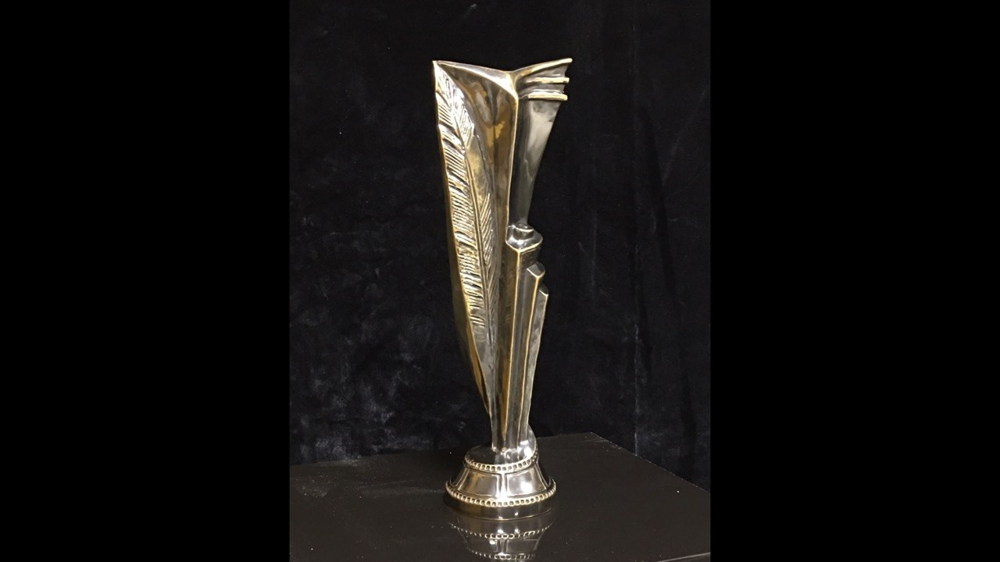
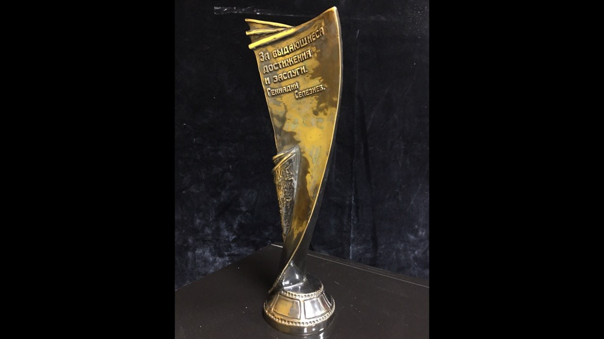
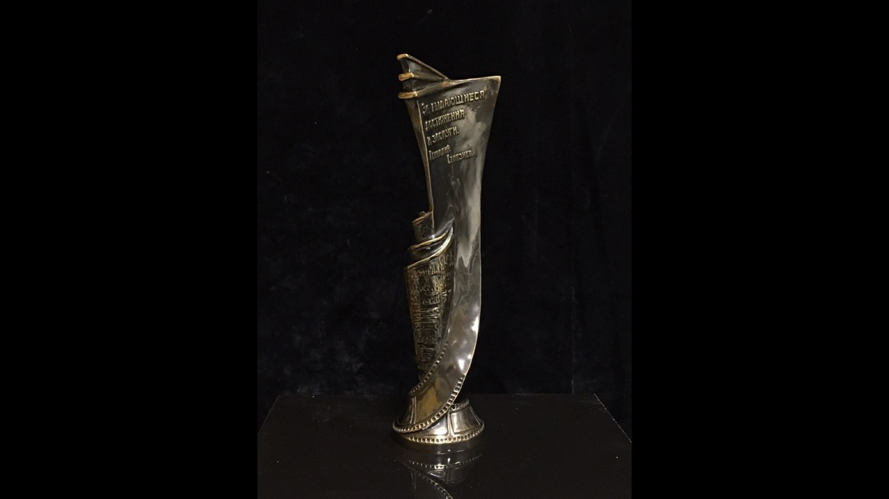

Сувениры и призы
Наградная статуэтка с пером
Высокая наградная статуэтка с рельефным пером на круглом основании. Три ракурса показывают силуэт, надпись и детали формы.
Награды / Скульптурная форма
Персональные роли участников в этом кейсе не уточнены.
Материалы проекта
3 фото · 0 видео. Видео запускается только вручную.


